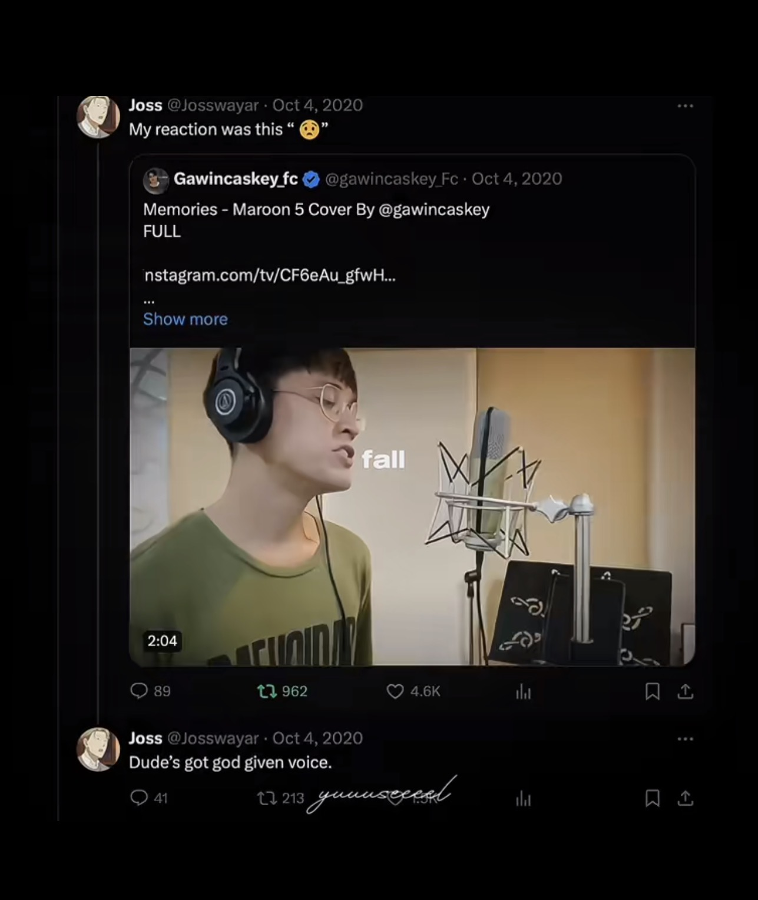
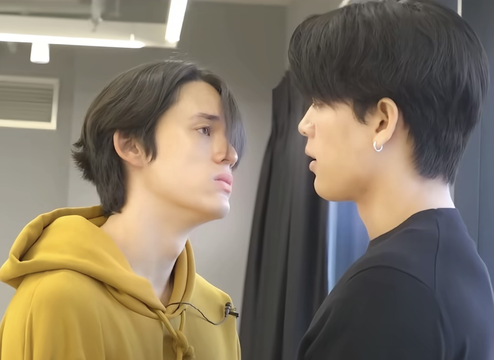

The Timeline

Step 1: The Beginning
ย้อนกลับไปเมื่อ 5 ปีก่อน... ความผูกพันเริ่มต้นขึ้นในห้องซ้อมร้องเพลงเล็กๆ ทั้งคู่พบว่าพวกเขามีครูสอนร้องเพลงคนเดียวกัน การแบ่งปันเทคนิคและการให้กำลังใจในวันนั้น คือจุดเริ่มต้นของมิตรภาพที่แข็งแกร่งในวันนี้ เเล้วหลังจากที่ทั้งคู่่เริ่มรู้จักกัน จอสมักจะชื่นชมกวินอยู่บ่อยๆเมื่อกวินลงคลิปร้องเพลงหรือมีงานต่างๆ
Step 2: The Casting
โปรเจกต์ "My Golden Blood" คือจุดเปลี่ยนสำคัญ เมื่อกวินได้รับเลือกให้มารับบทคู่กับจอส เคมีที่เข้ากันตั้งแต่วันแรกที่ฟิตติ้งทำให้ทีมงานและแฟนๆ ต่างรับรู้ว่า นี่ไม่ใช่แค่การแสดง แต่คือความไว้วางใจที่ส่งผ่านสายตา


Step 3: The Bond
ความต่างที่ลงตัวระหว่าง Introvert (กวิน) และ Extrovert (จอส) พวกเขามักจะใช้เวลาว่างร่วมกันในการเล่นบาสเกตบอล และสื่อสารกันด้วยภาษาอังกฤษเป็นหลัก ทำให้กำแพงความอายพังทลายลงจนกลายเป็นที่ปรึกษาที่รู้ใจที่สุด